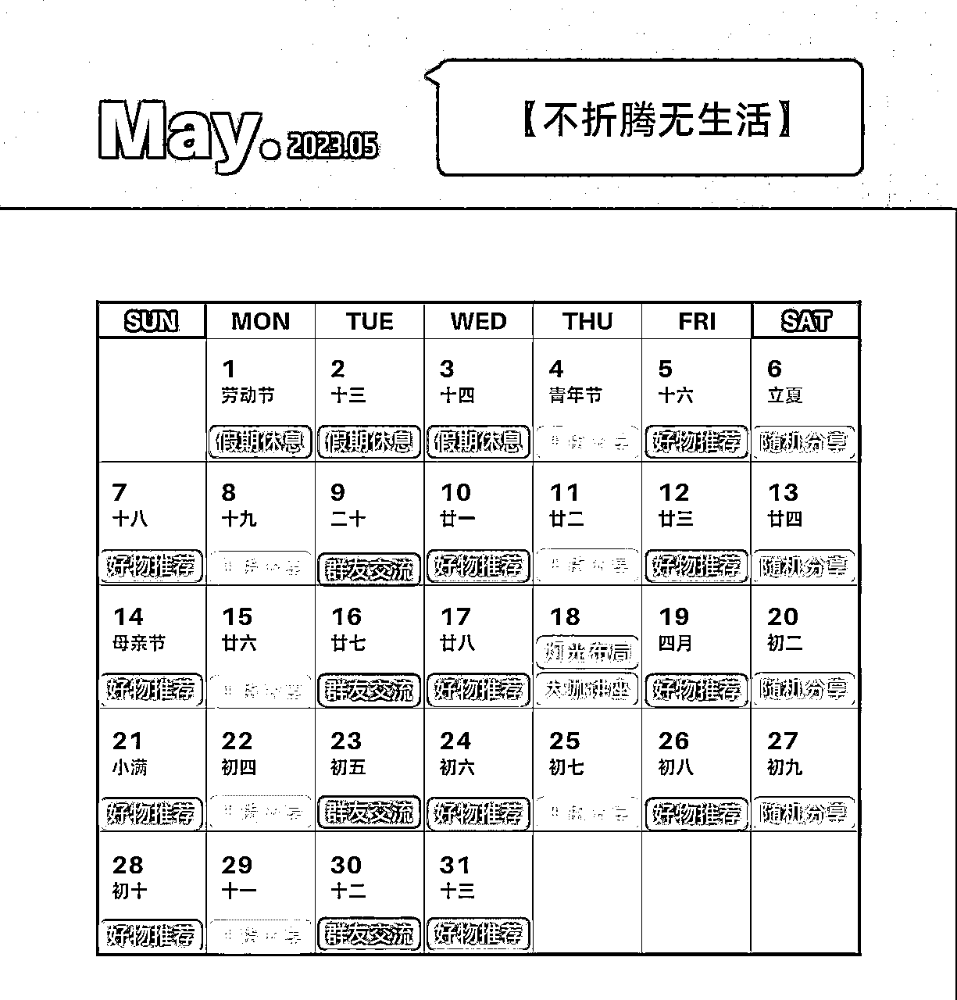
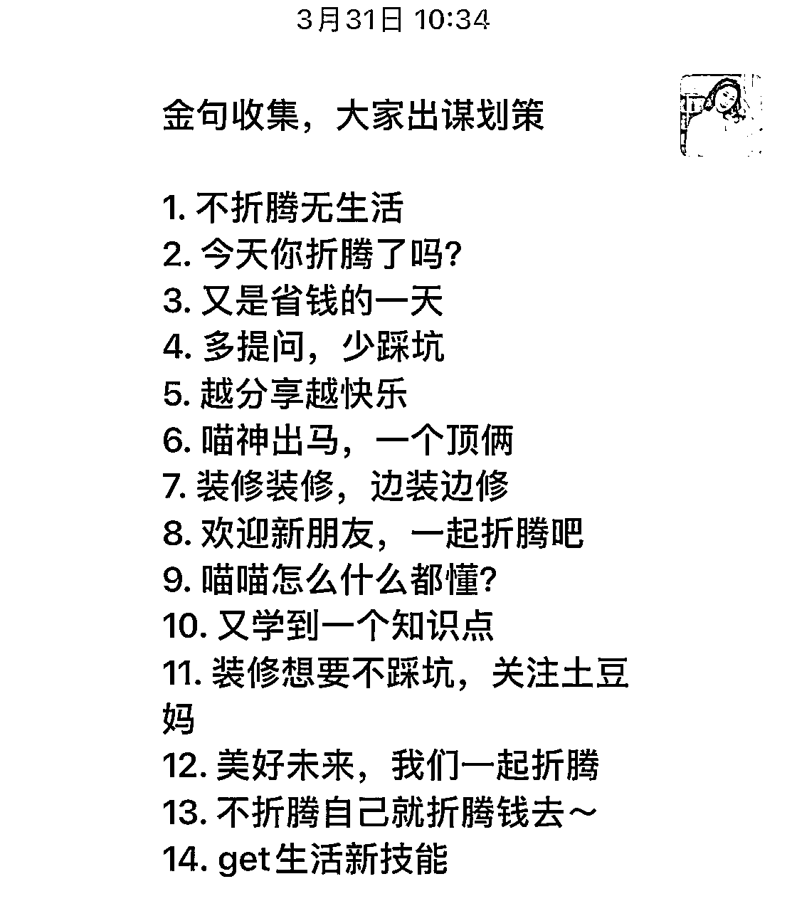

来源：https://sebz0gwoxb.feishu.cn/docx/FCekdjKiYoqbe6xUOxVcooOUnCb
作为一个体制内幼教，爱折腾房子的土豆妈，在社群运营方面完全是个新手，曾经创建过宝妈购物群、装修围观群，副业赚钱经验分享群等等，但经过3月社群运营大航海深入学习之后，才发现那些群都称不上真正意义上的社群。
这些无门槛的免费群都遇到了一系列共通的问题：
……
如果你的微信群，也遇到了同样的问题和困扰，不妨看看土豆妈是如何运用一些小技巧、小话术，一步步解决以上这些问题，把免费群转变成有活跃度、有价值、有变现的付费社群。
以下内容经过浓缩提炼，保证字字干货无废话，担心回看找不到，不妨先点个赞。
这里引用生财航海手册的内容，一看就懂。
社群，不仅仅是一个微信群、一个知识星球，社群是一种特定的组织，社群是一个逐步形成的、有兴衰、有内核的共同体。
行业千人大会现场群，不是社群。
单次转化群，低转高群，不是社群。
里边后编号***的微信群，不是社群。
群里装流量，不装用户的群，不是社群。
物业拉的业主群，税务局建的会计群，不是社群。
更多内容，请移步《社群运营航海手册》
划重点：免费群、秒杀群、团购群、快闪群都只是微信群，并不是社群。
简单来说，付费只是一种拒绝白嫖、筛选人员，提升价值的形式，付费的金额大小，可以根据社群运营的定位灵活设置。
以筛选白嫖引流为目的的新人沉淀群，可以设置1元，9.9元的低门槛；
以筛选付费能力为目的的训练营群，育儿群、团购群、年度陪伴群等，可以设置39/99/365的价格。
以体现价值为目的的高阶课程、陪伴私教群等，可以设置999,19999等更高价格。
划重点：有门槛有内容才能算社群，给群先标个价！
所谓定位定生死，定位找准，如有神助！
再次引用 @条形马 老师的社群航海手册分享的干货。
请多多多多多多多多多花一点时间，思考这个表格上所有的内容。
土豆妈的家居装修社群的定位思考，供大家参考。
划重点：万丈高楼平地起，社群运营定位先落地。
【灵魂拷问】：免费群要不要解散？要不要另开新群？种子用户收不收费？如何引导进新群？不愿意进新群，不想付费的群友怎么办？
【土豆妈实践】
群简介：
土豆妈在2021年6月二手房装修开工时，建立了一个【装修围观群】，吸引了一波对家居装修改造感兴趣的朋友入群，在历经波折的一年半的装修过程中，群友们一起见证了我家装修的各种翻车名场面，选购细节、以及装修完工高光时刻！但是基本都是我一个人的舞台，展现我家装修过程的方方面面。
群困惑：
装修完成之后，面临没高价值内容更新。
为爱发电的反复回答群友提出的类似问题，非常内耗。
没找到合适的变现方式。
群友有110+，绝大部分都是我的朋友圈铁粉免费入群，一小部分是低门槛付费入群（当时已经有这个意识了，但只收了9.9、19.9等低价），还有一部分长期潜水的无效群友，以及我想屏蔽出去一直碍于面子不敢踢的同事、领导、亲戚等朋友。
群操作：
基于之前1年半的社群高频输出，群聊天记录也没有沉淀到其他平台，后续可以再整理沉淀。
针对之前的旧群友一视同仁，全部打上标签，入新群永久免费。
群收获：
经过一波操作之后，土豆妈从110+的免费群中，平移转移了70人到了新的付费群中。这70人就成为了新群的种子核心成员。
划重点：核心目标就是激活有效群友，用最大的诚意把现有好友平移到新群。颇有一种毛毛虫破茧而出蜕变的过程，但到底是蝶？是蛾？能飞多远，飞多久，还得看造化！
具体用到的几种策略如下：
用群公告、群消息让群内活跃用户直接扫码入新群。话术简单直接，贴上新群二维码，需要群友自行扫码。
但凡第一时间看到群消息、群公告扫码入新群的，都是值得珍惜的种子用户。
划重点：一个动作甄别是不是你的忠实铁粉！
每日群内有互动交流的时候、群聊黄金时段发布群消息，发小额多次红包引起关注，激活潜水群友。
除了发红包，也可以用群接龙方式。
划重点：通过群红包、群接龙互动回复，筛选出有意愿的群友，还能在群内带一波节奏，激活观望的群友。
不得不承认，信息爆炸时代，每天每个人微信上有多少的消息，群消息被覆盖、被淹没都是常态。梳理免费群内还没有入新群的人员名单，一对一私聊触达通知到位，激活有兴趣入新群的潜水群友。
划重点：有的群友并不故意不看群消息，确实是太忙，一对一小窗，简单高效。
想屏蔽的群友，直接跳过一对一私聊，不主动联系，也不需要从旧群中踢出，对长期潜水群友无痕过滤。
划重点：私聊后没回复的群友，不回复就是默认拒绝。
如果你没有免费群的基础，那么土豆妈建议你可以从自己身边的好友、闺蜜、死党、粉丝中招募一批对你信任、认可的种子成员，作为你付费社群起步的核心成员。这一部分，可以是以免费的形式、资源互换的形式呈现！
划重点：大批量拉新之前，找准种子核心用户。
付费社群雏形搭建好之后，也有了一定的群友粉丝基础，那么第二阶段就是思考+完善社群的内容体系。社群的内核关注的重点：是否有持续的价值输出。
以下从社群内容、社群文化两个方面分享一下我的经验。
芷蓝教练说过：社群的初期，一定是群主通过大量内容输出，来让社群权益展现的。
土豆妈的社群定位在装修家居陪伴社群，365天的陪伴，曾经试过一个人输出，交付又重有累，从三方面着手打破一言堂、一对多单一的局面。
社群群内群主分享主要分为两大板块，干货攻略类和好物推荐类，干货分享的交付略重，次数少，好物推荐的交付轻松，次数多。同时也是为了后续变现做铺垫。每月的分享主题还可以找群友接龙，哪类有兴趣有需求就优先安排。
每日有群主内容，每周有群友分享，每月有大咖讲座。群主-群友-大咖，激发不同的社群人员角色来分享，丰富群内分享的内容。
每月制定本月的内容安排表，当日的细节内容可以微调，固定的板块内容提前计划安排。每月月初公布。分享的时间也相对固定，让社群始终保持在一个固定的活跃度上，同时也保留节假日的休息，避免群内信息过载。

PS:对比三月和五月的计划表，根据运营需求，实际情况，每月进行反思，迭代计划安排。
群精华内容太有价值了，一定要整理沉淀，最简单的就是整理到共享文档，目前采用的是飞书文档。
提问：要不要开知识星球？
土豆妈思考：陪伴社群的用户习惯几乎都在微信，连知识星球是什么都不知道，使用率非常低，甚至飞书文档也大部分人没使用过，个别还需要手把手指导。外加内容还没达到那么系统化、体量化，删繁就简，目前一个飞书文档能搞定的事情就够了。
以上就是近期几个月部分飞书沉淀的精华内容合集。有没有你特别感兴趣的话题？
条形马教练说过：陪伴型社群的重点不是内容，是关系。
那么群主如何维系和群友的关系？如何将社群的定位和核心价值更好的传达出来？有没有一些方便落地、低成本的小技巧？
给群友朋友圈评论，注意不是点赞，是评论。
定期找群友聊近况，挖掘潜力，目标就是每月寻找四位分享群友。
划重点：拉进群主与群友的关系、群友与群友的熟悉、群友对社群的归属感。
高级的广告，总是先做文化理念输出，而高级感一定要有个内容定位合适、页面设计精美的社群介绍海报。
给社群定内核理念：不折腾无生活。
给社群定色彩基调：橘色系，充满了温暖、积极向上的感觉。
给社区海报定配色方案：橘色配咖啡色系，明亮耀眼。
【社群海报 无二维码版】
划重点：一张优秀的海报，就是社群的明信片，哪都能派上用场。社群拉新必备！
（特别鸣谢@马热爱 帮忙打造的专属社群海报，一开始对社群定位的梳理非常混沌的时候，都是靠热爱醍醐灌顶的建议理清了思路，一遍遍改配色。强烈推荐有社群海报制作需要的朋友可以找她。报土豆妈名字有优惠）
找群友收集社群金句，找ChatGPT协助金句打造。第一批社群10句众筹完成之后，就打造成专属表情包。

结合了chatGPT,和群友的共创内容，生成了社群的独一无二的表情包标语。
（特别鸣谢@小沫的制作，表情包制作小能手，你值得拥有）
划重点：表情包在社群互动中，起到了潜移默化的群体带动作用！
朋友圈拉新技巧，土豆妈也还在学习中，主要就是依靠每日分享、社群干货截图、拉新付款截图等等，能力还不是很足，还需要跟大家多学习。
日常多混高质量的付费社群，装修可能是低频消费，但家居家电，收纳软装都是生活必须品，追求居住的舒适、生活的松弛感，都是高需求，有付费能力的人有能力会更好地生活场景买单。
比如生财就是一个特别高质量的社群，有很多生财的朋友都主动要求加入，作为嘉宾分享，群友分享，互相赋能，合作共赢！
社群里的群友，都是自带流量的活广告，鼓励群友帮忙宣传引流，给足群友拉新分佣。普通群友拉新30%返佣，合伙人50%返佣。一定要舍得花钱回馈忠粉！
社群输入的内容，通过排版、编辑同步到知乎、小红书、公众号等公域平台。另外补充一下家居类的可以关注好好住、住小帮、今日头条、知乎等平台。
生财有太多的关于引流的精华分享了，不做展开。
条形马教练说：在社群没有搭建好之前，进群就是要慢！
目前，土豆妈的【不折腾无生活】家居装修社群，从0-1运营了四个月，社群人数135人，坚持每日分享，邀请群友分享14场，大咖讲座4场，沉淀精华资料近5w字，入群门槛从0元到199元逐级增加，装修家居陪伴社群进一步拓展后端变现渠道，收入已过万，帮助了100多个群友，减轻装修决策压力，遇到踩坑问题协助快速补救，花少的钱买更好的建材家电家具，群内正在装修中的朋友人均立省上千！
有别于训练营、私教小班课程群等，可以短期交付，做高客单价，同步开营n个群。像土豆妈这样的陪伴型社群，入门客单价并不高，交付也相对较重，光靠入群费用无法支撑社群运营的时间、精力成本。
因此，付费社群在运营中或者进入正轨后，就要考虑第三阶段：后端变现渠道的拓展问题。
结合了目前土豆妈已经跑通的闭环跟大家分享几个变现渠道
带货变现是私域领域最简单的一种变现形式，但是一定要把握住度，不能跟团购群一样，整天刷硬广。
借助快团团、群买买小程序带货，不用囤货发货、售后压力小。定位要准确，结合每日干货输出，丝滑带货。
比如厨房清洁好物系列，都是自用体验真实推荐，花王系列、大公鸡清洁剂、管道疏通剂等等，家居日用品，利用快团团承接满足一波群友被种草的购物需求，直接下单购买。
4、5月付费社群搭配无门槛团购群，变现了1000+。
临近618，群友的购物欲望空前高涨，被一波群友追着喂饭！想买啥，群里喊，土豆妈快速找渠道找货源，公域粉丝少没关系，找有资源的群友对接品牌方就行了！
晚上沟通到半夜12点多，第二天就谈妥了各种细节，谈到某品牌小家电，天猫官网下单，博主暗号下单即可。
这种类型带货，在公域平台大博主中很常见，标品信任度高，刚需产品佣金可观。

另外还有一种的私域资源变现，直接对接到某品牌清仓资源，用excel表格形式发布在社群内，有需求直接找我下单，我负责跟品牌方对接细节，安排发货等。家具类属于高客单价，值得做一做。
618还没结束，我就不晒单了。
装修从设计到施工到软装到入住，牵涉到方方面面，比如设计师工作室、装修公司、全屋定制、门窗、地板、瓷砖、阳光房、移门、乳胶漆、窗帘、灯具、甚至开荒保洁每一个对应的供应商都可以合作，行业内都有约定俗成的转介绍费，5%-20%不等。
社群里都是精准定位有装修、改造需求的客户，尤其是本地客户此类转介绍变现成单多，利润高。
通过社群的输出，全方位丰满地展现个人IP的能量。关于买卖房产、学区规划、装修定位、租房改造等等，有任何问题都可以约个人咨询服务。目前定位999/3h，做身边贴心的家居陪伴咨询服务。
同时，我也在考虑再推出一个终身陪伴式的高客单价咨询服务，以及规划打造相关的课程，这些算是第四阶段要完成的任务了，也是土豆妈努力的方向，详情请听下回分解。
以上就是体制内的土豆妈，在自媒体副业探索中的最近几个月的付费社群运营中的点滴经验分享！
零基础的运营新手，0-1做付费社群看懂了，赶紧去实践一下吧！有社群运营方面困惑的可以一起探讨。
另外有家具家电资源的可以合作共赢，近期有买卖房、装修改造出租需求的，欢迎链接（点击头像看个人介绍）帮大家理思路，少踩坑！
【以下是爱折腾的土豆妈其他生财精彩好文】
1.【精华】体制内从0-1突破舒适圈，副业年赚20W+的心得
https://t.zsxq.com/0eaZJFUlr
2.职场宝妈5年6次房屋买卖赚百万的血泪经验
https://t.zsxq.com/0erH7ZwY7